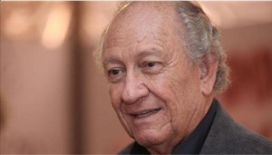

Pereira es el segundo venezolano que recibe este galardón, luego de que Ramón Palomares obtuviera este reconocimiento en su primera edición.
La presidenta del Centro Nacional del Libro, Christhian Valles, destacó la calidad intelectual, ética y humana del poeta ganador y resaltó la consolidación de este premio y del sistema bienales que está en crecimiento “para incluir a nuevos autores en los reconocimientos”.
Pereira exaltó cómo en los últimos años “las disciplinas, que tienen que ver con el alma y la sensibilidad, desapercibidas en el pasado, se han ido colectivizando”.
Habló del gran número de publicaciones que han brotado y de la exacerbación de los cultores populares como prueba de que se está viviendo “un prolegómeno, el inicio, de lo que pudiera ser, si quienes tienen la responsabilidad de hacerlo lo logran, un proceso de transformación”.
Para el poeta y ensayista, también autor del preámbulo de la Constitución Nacional, un proceso de transformación verdadero se opera en la conciencia de las personas: “Las conciencias de los seres humanos sólo pueden nutrirse, transformarse con bienes culturales. Si nuestros alcaldes, gobernadores, gobernantes en general y funcionarios no terminan de entender que la cultura es el cimiento de todo proceso transformador verdadera, no habrá revolución que camine”, expresó.
Aclaró que la cultura, desde su punto de vista, es todo cuanto haga el ser humano para prodigar la vida: desde la comida hasta el poema, en este sentido, explicó que una revolución que intente hacer al mismo tiempo revolución cultural debe hacer énfasis en los valores.
“El arte y la literatura tienen un rol fundamental porque apuntan lo más sagrado del ser humano que es la sensibilidad”, dijo quien reveló que la poesía siempre lo ha salvado de situaciones críticas: “De vivir, como decía Unamuno, se vive mejor en la poesía”.
Con una avalancha de premio a cuestas, entre ellos el Premio Universidad del Zulia (1967), el Municipal de la Poesía de Caracas (1987), el premio Fundarte de Poesía (2003), el de la Bienal Ramos Sucre (1997), el Premio Nacional de Literatura (2001), among others, confiesa, que los galardones nunca lo han desvelado.
Dijo que el peruano César Vallejo, al que definió como “uno de los poetas mayores de cualquier lengua y de cualquier latitud en el planeta”, no recibió ninguno.“Los premios los he aceptado como un hecho natural, se gana, se pierde como si fuera un boxeador. Me encuentro entre quienes creen que los premios no le otorgan a alguien ninguna majestad”, apuntó
“Para mí este acto no significa sino un llamado a reafirmar la concepción de que sin bienes culturales no existe transformación. Estoy acá para contribuir con un granito de arena, que cada venezolano puede dar, para acumular en la gran montaña que significa el proceso que Venezuela ha emprendido”, expresó.
Pereira recibirá el Premio Víctor Valera Mora, que consta de un diploma y 100.000 USD, este jueves 15 en el Centro de Estudios Latinoamericanos Rómulo Gallegos (Celarg) to 7:00 pm.
 Word of the world
Word of the world Americas Network International Poetry Festival
Americas Network International Poetry Festival